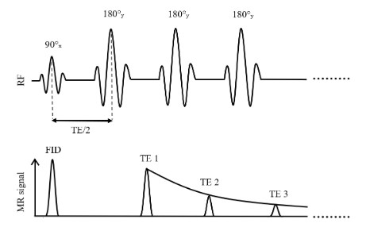

Microscopic: susceptibility differences between tissues
(Chavhan 2009; Cohen-Adad 2014)
Click and drag to reorient
Why map T2?
A T2map is an image of T2 relaxation times, with insights into tissue composition
Sensitive to microstructural changes associated with disease: iron accumulation, myelination, inflammation(Dortch 2020)
A promising modality for clinical and research applications
Newer techniques go beyond the conventional ones developed for NMR, e.g. MR fingerprinting: several parameters from a single acquisition (Ma 2013; Hamilton 2017)
What this chapter covers
Mono-exponential
The voxel's signal arises from a single tissue compartment.
One T2 per voxel, fitted from a multi-echo spin echo acquisition.
Multi-exponential
Several tissues contribute to one voxel's signal.
Applications such as myelin water fraction (MWF) imaging.
T2*
Fundamentals of T2* mapping, and how its decay curve differs from T2.
Related application: quantitative susceptibility mapping (QSM).
T2 mapping vs T2-weighted imaging
T2-weighted (T2w)
The standard practice in clinical MRI
Tissues give signal according to their T2: differences in T2 provide contrast
Qualitative: interpretation depends on the observer
T2 mapping
Quantitative: fits multiple data points to a decay curve to calculate T2
Consistent comparisons across imaging protocols: suited to longitudinal and multi-institutional studies (Cheng 2012)
T2-weighted images vs the T2 map
Use the menu to switch echo time.
Method 1 · Mono-exponential
Mono-exponential T2 Mapping
A single fitted T2 value for each voxel
Acquiring a decay curve
The simplest technique: several images with a single-echo sequence at different echo times (TE), then fit T2 to the decaying signal (Milford 2015)
Not typically used in vivo: prohibitively long acquisition times
Multi-spin echo (MSE) sequences, based on the Carr–Purcell–Meiboom–Gill (CPMG) pulse train (Carr 1954; Meiboom 1958)
Multiple 180° refocusing pulses generate multiple echoes in a single acquisition(Fatemi 2020; Milford 2015)
Substantially shorter scan time than separate single-echo acquisitions: MSE is the sequence of choice in clinical settings
Carr–Purcell, and the Meiboom–Gill improvement
Carr–Purcell
A 90° pulse, then a series of 180° pulses along the same axis (e.g. x)
Mitigates diffusion effects by preventing phase accumulation
But imperfections in the 180° pulses accumulate: Mxy is lost faster than expected, and T2 is inaccurate (Brown 2014)
Meiboom–Gill
The 90° pulse along one axis (e.g. x), the 180° pulses along a perpendicular axis (e.g. y)
This phase cycling distributes the errors so they average out over time
A more stable and accurate echo train (Brown 2014)
Pulse sequence

Figure 3.2. Simplified illustration of a multi-spin echo sequence for T2 mapping based on the Carr–Purcell–Meiboom–Gill method.
The mono-exponential assumption
Homogeneity within each voxel is assumed implicitly: one T2 decay time across the tissue
So a single fitted T2 value for each voxel in the image
Widely used, but shown to be insufficient for proper estimation of tissue T2: a voxel's signal often arises from multiple components with different T2 values (Graham 1996)
Multi-exponential methods, and their use for myelin water fraction imaging, come later in the chapter.
Signal modelling
The decay of the transverse magnetization is exponential, from the transverse component of the Bloch equations:
Acquired with gradient echo (GRE) sequences, which are sensitive to field inhomogeneities, unlike the spin echo sequences used for T2(Cohen-Adad 2014; Markl 2012)
SAGE (spin and gradient echo) acquires T2 and T2* simultaneously (Stokes 2014)
Noise
Noise makes the T2 decay harder to fit accurately, a problem when clinical contexts need highly precise T2 values
Particularly for pixel-wise T2 mapping: SNR is much lower than with region-of-interest (ROI) approaches (Sandino 2015)
Next: a single-voxel fit, true T2 = 109 ms, at four SNR levels.
Impact of noise on the T2 fit
Use the menu to change the SNR. The fitted T2 is in the legend.
How many echoes, and when?
The number of echoes depends on echo spacing, the risk of heating the sample, and processing low-SNR data (Shrager 1998)
The Cramér–Rao lower bound (CRLB): the smallest possible variance of an unbiased estimator, given the noise in the data (Cavassila 2001)
Gives the optimal number of echoes to fit the decay accurately (Jones 1996)
Optimized echo times for a predetermined range of expected T2 values beat uniformly spaced echo times in accuracy (Shrager 1998)
Benefits and pitfalls
Benefits
Simple, straightforward implementation: a convenient and efficient T2 fit
Each term is the contribution of the ith tissue component to the overall decay (Collewet 2022; Dortch 2020)
Next: a single voxel of myelin water (MW) and intra/extracellular water (IEW), with mono-exponential curves for each and the multi-exponential curve for both.
Mono- vs multi-exponential: myelin water and IEW
Drag the slider to change the MW and IEW fractions.
Data fitting
Eq. 3.5 in terms of the initial amplitude Si of each tissue component:
QSM measures variations in tissue magnetic susceptibility(Ruetten 2019; Wang 2015)
Quantifies paramagnetic and diamagnetic substances such as iron, calcium, oxygen and myelin(Ruetten 2019): insights into tissue physiology and integrity
Altered iron levels are linked to multiple sclerosis(Stephenson 2014) and Parkinson’s disease(Chen 2019): candidate biomarkers for neurodegenerative disorders
QSM: the phase holds the susceptibility
The MRI signal is complex: magnitude and phase
T1, T2 and T2* contrasts use only the magnitude; the phase carries information about tissue magnetic susceptibility
T2* includes T2′, the dephasing from field inhomogeneities, caused mainly by susceptibility differences between tissues (Ruetten 2019)
QSM combines the magnitude and phase of T2* acquisitions to map susceptibility within tissues (Shmueli 2020)
Next: susceptibility and B0 in a brain, simulated at 7 T.
A B0 field map and its susceptibility distribution
Hover to read values.
Benefits and pitfalls
Benefits
More accurate T2 for complex, heterogeneous tissue: each voxel is multi-compartmental, each tissue with its own T2
Particularly suited to MWF imaging, to understand demyelinating diseases such as MS (Alonso-Ortiz 2015)
Pitfalls
More complex than mono-exponential: longer acquisition times(Kumar 2012)
Sensitive to noise(Dula 2009), which can make accurate fits challenging
Summary
Mono-exponential
Simple and efficient; fast with multi-echo spin echo.
One T2 per voxel over-simplifies tissue; B1 errors overestimate T2.
Multi-exponential
Comprehensive and accurate for heterogeneous or pathological tissue, e.g. MWF.
Longer acquisitions; sensitive to noise.
T2*
T2 plus field inhomogeneities (T2′); measured with gradient echo.
With the phase, the basis of QSM.
The choice of mono- or multi-exponential depends on the clinical or research application and the complexity of the tissues studied.
Exercises and discussion
The chapter ends with four exercises that use the interactive figures and the notebooks (on Binder or in MATLAB)